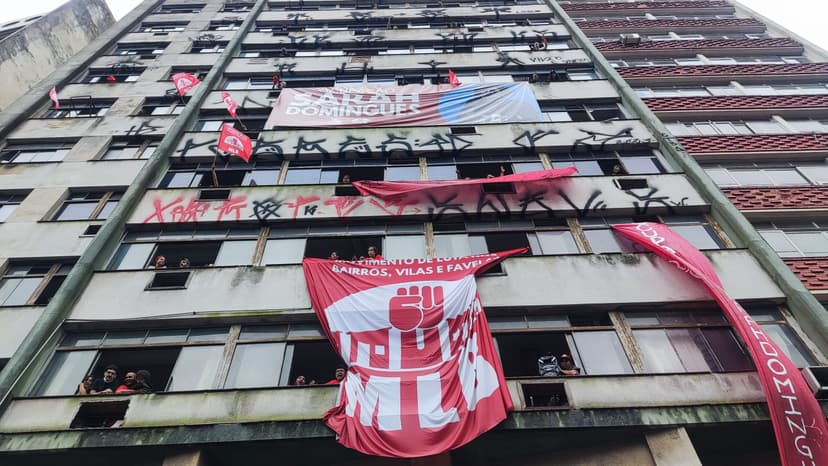
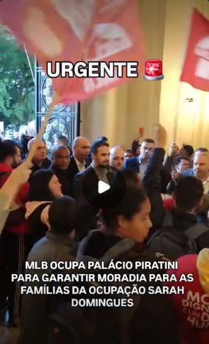
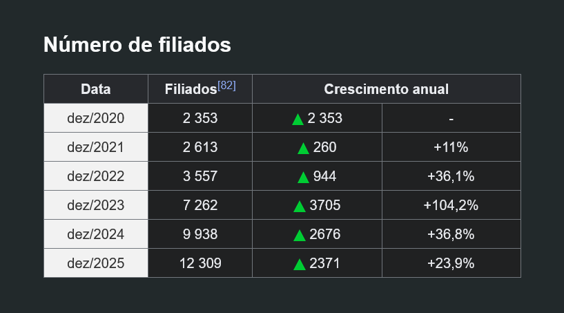
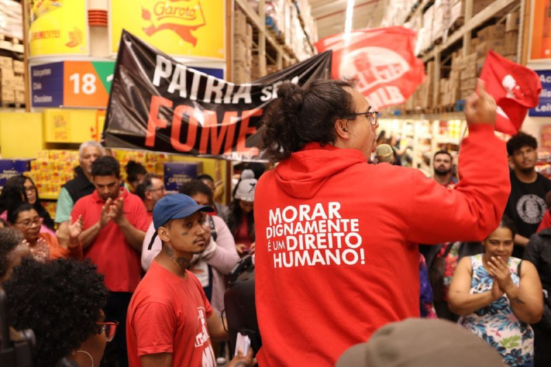

É comunista e disputa eleições?
Muito se fala sobre como finalmente temos comunistas com chances reais de se eleger, mas como se difere exatamente uma candidatura comunista das demais?
Para responder essa pergunta, vamos recorrer à uma breve introdução sobre conceitos fundamentais nessa discussão.
Estado
O Estado não é uma força imposta do exterior da sociedade, mas um produto da sociedade em certo estágio de desenvolvimento. Numa sociedade de classes, com interesses econômicos antagônicos, o Estado serve justamente para atenuar os conflitos decorrentes desses antagonismos no limite do "aceitável".
Acontece que o Estado não atenua os conflitos por meio da conciliação de classes e sim da imposição da classe dominante sobre as demais.
Trata-se de um órgão de dominação de classe, que organiza a sociedade de acordo com os interesses da classe dominante. Essa dominação é obtida, por exemplo, por meio do monopólio da força: destacamentos armados, prisões e instituições coercitivas.
E, por incrível que pareça, no capitalismo, os instrumentos repressivos são menos explícitos.
Nele, a exploração pela violência divide espaço com a exploração econômica (diferente do servo e do escravo, o proletário seria um "homem livre", capaz de ascender de classe). Esse fenômeno contribui com a aparência de "neutralidade" das Instituições, que seriam mantenedoras do bem comum e não da propriedade privada e da exploração do trabalho assalariado pelo capital.
Nesse contexto, o Parlamento e o sufrágio universal, na verdade, contribuem na construção dessa imagem neutra e democrática do Estado. Afinal, as eleições representam a vontade da maioria, não é?
... não! Ainda que a classe trabalhadora tenha o direito de se candidatar e de votar, o poder material da burguesia se sobressai:
A república democrática é o melhor invólucro político possível para o capitalismo; por isso, o capital, tendo se apoderado desse melhor invólucro, fundamenta seu poder de modo tão sólido, tão seguro, que nenhuma substituição na república democrática burguesa, nem de pessoas nem de instituições, tampouco de partidos, abala esse poder.
— Lenin, O Estado e a Revolução.
Notem que a perspectiva marxista-leninista do parlamento é muito distinta daquela da esquerda institucional. Esta vai dizer que é preciso dialogar com a sociedade civil, reunir as melhores propostas de políticas públicas e então eleger governantes que se sensibilizem por essas causas, que cuidem do nosso povo, no executivo e no parlamento, rumo ao dia em que teremos a sonhada maioria no Congresso. Ou como diz o presidente Lula:
Lula defendeu que o partido vá para as ruas e converse com o povo para ouvir sobre suas necessidades. “Para quando ganhar, governar junto com o povo. Por isso criamos o orçamento participativo, que foi adotado pela ONU como melhor exemplo de gestão de recursos públicos”, declarou. “Nos nossos governos, o povo fazia o orçamento e dizia que obras e onde ele queria”.
“Vamos fazer uma revolução, sem dar um tiro e sem contar uma mentira”, prometeu.
Ou então:
Se a gente quiser fazer uma revolução nesse país, a gente não tem que ler nenhum livro de [Karl] Marx, ser leninista, ser Mao Zedong, ser Fidel [Castro]. Leia a Constituição brasileira e vamos regulamentar todos os direitos do povo que estão lá...
Em contraste, Lenin é categórico:
Somos pela república democrática como melhor forma de Estado para o proletariado sob o capitalismo, mas não temos o direito de esquecer que a escravatura assalariada é o destino do povo mesmo na república burguesa mais democrática.
— Lenin, O Estado e a Revolução.
Os comunistas não querem aperfeiçoar a máquina do Estado Burguês e sim organizar a revolução que irá tomar o poder e superar esse Estado; construir o Estado proletário que irá suprimir a propriedade privada em nome da propriedade coletiva dos meios de produção e construir, dia após dia, as condições para que o Estado, um instrumento de violência de uma classe sobre as demais, deixe de ser necessário: o fim das classes.
Uma vez tomado o poder:
O caminho de saída do parlamentarismo, naturalmente, não consiste na extinção das instituições representativas e da elegibilidade, mas na transformação das instituições representativas, de lugares de charlatanice em instituições "de trabalho".
— Lenin, O Estado e a Revolução.
Lutas Parciais e Reformas
Se os comunistas não veem o Estado capitalista como meio de emancipar a classe trabalhadora, seríam então contrários às lutas parciais e às reformas?
Para responder essa pergunta, tomemos um exemplo concreto.
Em 2026, o Boulos fez a seguinte declaração:
Quando eu participava e organizava ocupação de terra improdutiva pelo MTST, se eu chegasse na assembleia com 5 mil pessoas que estavam pagando aluguel sem poder, numa área de risco, e dissesse "gente, ou é socialismo e a desapropriação da especulação imobiliária, ou é nada!", eu seria linchado. Sabe o que a gente tinha que fazer? A gente precisava negociar com proprietário pra não ter despejo, a gente tinha que negociar prazo na justiça, a gente tinha que negociar com o governo (as vezes de direita) pra poder sair um bolsa aluguel, pra poder sair um bolsa moradia, porque essa é a vida real de quem trabalha com o povo.
— Boulos, Podcast 3 Irmãos #910.
Esse tipo de declaração tem o intuito de colocar a esquerda institucional como a realista e os comunistas como utópicos que se recusam a travar a luta cotidiana, que defendem que "ou é revolução, ou nada".
Vamos, então, aos fatos.
Em 2024, no contexto das chuvas que desabrigaram uma infinidade de pessoas no Rio Grande do Sul, o Movimento de Luta nos Bairros, Vilas e Favelas (MLB), organização marxista-leninista, ocupou um prédio que estava há 10 anos abandonado. Nascia a Ocupação Sarah Domingues.

Ocupação Sarah Domingues. Foto: Mostra LONA
Porém, em questão de dias, o governo de Eduardo Leite expulsou as 100 famílias do prédio:
Sob chuva e frio, PM gaúcha faz reintegração de posse e retira famílias de ocupação em prédio de Porto Alegre.
— Brasil de Fato, 16 de junho de 2024.
Uma semana depois, o MLB resolveu ✨negociar✨:

E a direção do MLB não ocupou o palácio para dizer para suas bases “revolução ou nada”. Isso não passa de um espantalho. Após insistentes reuniões com o governo, os comunistas conquistaram um novo terreno na marra.
Famílias da Ocupação Sarah Domingues conquistam terreno.
— Jornal A Verdade, 31 de agosto de 2024.

Destaque para conclusão da matéria:
Da lama suja da enchente, do cheiro de morte que cobriu nossas ruas e o nosso estado, brotou o fervor da luta, e o povo decidiu tomar o seu destino em suas próprias mãos. Não temos nada a perder na luta, mas sim um mundo inteiro para conquistar.
— Jornal A Verdade, 31 de agosto de 2024.
Não somos contrários às lutas parciais. Somos contrários ao uso oportunista delas para negar a necessidade da revolução socialista, isso sim.
E discursos como o de Boulos não são novidade. No início do século XX, se fortaleceu no movimento socialista internacional uma corrente que defendia que era possível colocar o aparato estatal capitalista à serviço dos trabalhadores. Segundo essa interpretação, é impossível destruir de uma vez só a propriedade privada, mas reformas possibilitariam uma “expropriação progressiva” da burguesia.
Em resumo, os sindicatos, as reformas sociais, a democratização do Estado – a luta legal – seriam os meios para realizar progressivamente o socialismo. O capitalismo, então, poderia ser administrado em prol dos trabalhadores.
Mas, como vimos anteriormente, o Estado capitalista não está acima das classes, mas é justamente o instrumento de manutenção dos interesses da burguesia.
O domínio de classe não repousa em direitos adquiridos, mas em relações econômicas.
[...] nenhuma lei do mundo pode dar [ao proletariado] os meios de produção no quadro da sociedade burguesa, porque não foi uma lei, mas o desenvolvimento econômico que o despossara desses meios de produção.
— Rosa Luxemburgo, Reforma ou Revolução?
Por isso, as reformas não podem ser um fim em si mesmas. A luta sindical, a luta parlamentar e, consequentemente, a luta por reformas, precisam ser meios de educar a classe trabalhadora.
Mas educar em que sentido?
A participação da classe trabalhadora nessas lutas deve produzir, gradualmente, a convicção de que é impossível transformar radicalmente nossa situação apenas por meio delas, que a nossa emancipação só é possível com a tomada do poder político.
A luta sindical e a luta política são importantes porque atuam sobre a consciência do proletariado, porque lhe dão uma consciência socialista, porque o organizam como classe.
— Rosa Luxemburgo, Reforma ou Revolução?
Essa consciência não se dá de maneira espontânea, é papel do partido comunista se inserir nessas lutas e induzir a consciência revolucionária, reafirmar a necessidade da revolução socialista e organizar os trabalhadores enquanto classe.
Como as reformas sociais são e continuarão a ser, em um regime capitalista, nozes ocas, a etapa seguinte será, muito logicamente, a desilusão.
— Rosa Luxemburgo, Reforma ou Revolução?, adaptado.
Isso é observável na nossa história recente. Os 8 anos de governo Lula, sucedidos por 5 anos de governo Dilma trouxeram melhorias imediatas nas condições de vida dos trabalhadores, mas a sonhada maioria no parlamento nunca veio e, em seguida, a direita tomou a ofensiva (teto de gastos, reforma trabalhista, reforma da previdência etc.) e a desilusão da classe trabalhadora com a política institucional foi cooptada pela extrema-direita fascista.
Portanto:
Quem se pronuncie a favor da reforma legal em vez [...] da revolução social, na realidade, não escolhe uma via mais agradável, mais lenta e segura, conduzindo ao mesmo fim; mas tem um objetivo diferente; em vez de procurar edificar uma sociedade nova, contenta-se com modificações sociais da sociedade anterior.
— Rosa Luxemburgo, Reforma ou Revolução?
O problema não se trata da vontade política dos governantes, da falta de um político de esquerda que não se corrompa pela ideologia burguesa, estamos falando de limitações estruturais que impedem que a estratégia das reformas progressivas rumo ao “socialismo” prospere.
Eleições
Diante de tudo discutido até aqui, seria válido que comunistas usem a disputa parlamentar como forma de luta?
Depende.
Disputar as eleições, em si, não é revolucionário, nem contrarrevolucionário. Tudo depende da conjuntura e dos objetivos almejados.
Lenin defende que os comunistas não se limitem a denunciar somente a exploração econômica do capitalismo e que os comunistas devem abordar todas as formas de exploração que o capitalismo gesta.
É preciso também se apropriar das diferentes formas de luta: construção da imprensa partidária; difusão da literatura marxista; construção de círculos de estudo, manifestações e greves; disputa parlamentar, trabalho extraparlamentar... Os comunistas precisam adquirir repertório nas inúmeras formas possíveis de se acumular forças.
Ainda que os comunistas tenham total clareza do teatro que é o parlamento, para o senso comum é nele que a política se realiza:
Como se pode dizer que o "parlamentarismo caducou politicamente" se "milhões" e "legiões" de proletários ainda são não apenas partidários do parlamentarismo em geral, mas inclusive, francamente "contra revolucionários"!? [...] Trata-se exatamente de não acreditar que o caduco para nós tenha caducado para a classe, para a massa.
— Lenin, Esquerdismo – Doença Infantil do Comunismo.
Quantas vezes nós ouvimos, de eleição em eleição, queixas de que o brasileiro não sabe votar e deboche sobre a figura do “pobre de direita”? O atraso das massas não se dá por acaso:
Os escravos assalariados de hoje, em consequência da exploração capitalista, vivem de tal maneira acabrunhados pelas necessidades e pela miséria que nem tempo têm para se ocupar de "democracia" ou de "política"; no curso normal e pacífico das coisas, a maioria da população encontra-se afastada da vida sociopolítica.
— Lenin, Esquerdismo – Doença Infantil do Comunismo.
E reconhecer o estado de despolitização da classe trabalhadora não significa sentenciar sua incapacidade de elevar sua consciência. A tarefa dos comunistas consiste em saber convencer os elementos atrasados, saber atuar entre eles.
Portanto, sim, na atual conjuntura faz sentido que comunistas encarem as eleições como meio de luta proveitoso.
Resta debater como se dá essa disputa eleitoral.
Nossa atuação no parlamento não deve se pautar pela forma com que a direita coopta a classe trabalhadora. Não precisamos da disseminação de fake news e não precisamos apelar para o debate moral. Também não devemos rebaixar nosso programa revolucionário para torná-lo mais palatável, não devemos abandonar a construção coletiva para travar uma luta individualista, personalista, em torno de uma figura que vai “cuidar” do povo.
Queremos formar militantes, não eleitores.
Temos clareza de que isso torna o processo mais trabalhoso, mas nós não queremos iludir a classe trabalhadora prometendo sua emancipação pelo parlamento, ou que, se votar direitinho, de eleição em eleição os trabalhadores vão conquistando e acumulando direitos. Na verdade, queremos escancarar os limites dessa luta:
Para que realmente as grandes massas dos trabalhadores e dos oprimidos pelo capital cheguem a ocupar essa posição, a propaganda e a agitação, por si, são insuficientes. Para isso necessita-se da própria experiência política das massas. [...] experimentar em sua própria pele toda a impotência, toda a veleidade, toda a fraqueza, todo o servilismo ante a burguesia, toda a infâmia do governo dos cavalheiros da Segunda Internacional.
— Lenin, Esquerdismo – Doença Infantil do Comunismo.
E se as eleições são um instrumento para organização da nossa classe, as candidaturas precisam estar ligadas diretamente ao partido comunista; devem ser uma escolha coletiva, não individual.
A Unidade Popular(UP) é um partido marxista-leninista que usa das eleições para disputar a consciência da classe trabalhadora. Como podemos ver, o partido cresce ano após ano.

Num dia, esses militantes estão se filiando por influência da disputa eleitoral; no outro, estão tocando greves, construindo ocupações urbanas, ocupando supermercados, se formando politicamente e contribuindo para radicalizar mais pessoas.

MLB conquista 13.500 cestas básicas com ocupações de mercados.
— Jornal A Verdade, 09 de setembro de 2024.
Movimento de mulheres realiza 16 ocupações pelo fim do feminicídio e pelo socialismo.
— Jornal A Verdade, 14 de março de 2026.
E não tenham dúvida, se é possível usar as eleições para despertar a consciência das pessoas, essa luta extraparlamentar também rompe com qualquer esperança na democracia burguesa. Por exemplo, a atuação policial ante as ocupações urbanas é uma demonstração esclarecedora de como a função da polícia é a defesa da propriedade privada e não da vida. Nenhum militante que constrói esses espaços vai ter dúvida disso.
E você podem pensar: "isso é muito pouco, logo que o MBL surgiu eles já tinham eleito deputados enquanto os comunistas não elegem ninguém. Os comunistas alcançam menos pessoas que a direita porque são amadores na comunicação."
Não podemos esquecer do financiamento que envolve o MBL e seus membros.
Para se eleger deputado federal em 2018, a campanha do Kim Kataguiri teve aproximadamente 290 mil reais em despesas.
Já a campanha do Arthur do Val para deputado estadual teve aproximadamente 248 mil.
Quando conferimos a lista de doadores de campanha, notamos, por exemplo, que cada um contou com um empurrãozinho de 50 mil reais do fundador da Localiza, José Salim Mattar Junior.
Estamos falando de 2 pessoas que se projetaram nas jornadas de junho de 2013, contavam com inúmeros seguidores nas redes e mesmo assim precisaram de milhares de reais para se eleger.
Não são exemplos de meritocracia, são figuras artificialmente construídas que sempre contaram com investimento privado para se impulsionar.
Nossa régua para medir o êxito das candidaturas marxista-leninistas, organizadas, não pode ser a comparação fria com os números que a direita compra, mas o saldo organizativo construído a partir das eleições.
Isso não significa que devamos usar a falta de recursos para encobrir nossas falhas, nem que não aspiramos a eleição dos comunistas, mas essa ambição não pode significar abdicar a construção do partido, do programa e da teoria marxista-leninista. Não pode significar sacrificar nossa construção de longa duração em nome de promessas de ganhos à curto prazo.
Um dos maiores desvios que um comunista pode cometer nessas eleições é usar do acúmulo de desvantagens impostos pela legislação eleitoral para desestimular a organização dos trabalhadores enquanto classe, taxando o Partido Comunista de amador e incompetente para justificar iniciativas individualistas pretensamente mais avançadas que o movimento comunista como um todo.
📕 Bibliografia
- Vladímir Ilitch Lênin. O estado e a revolução: doutrina do marxismo sobre o estado e as tarefas do proletariado na revolução. Boitempo.
- Vladímir Ilitch Lênin. Esquerdismo – Doença Infantil do Comunismo. Expressão Popular.
- Rosa Luxemburgo. Reforma ou revolução? Expressão Popular.
- Ian Neves. Glossário Marxista-Leninista. Verbetes: Estado, Esquerdismo e Social Democracia.
- Ian Neves. Por que a esquerda radical não consegue se eleger? (part. Sued Carvalho).
- Ian Neves. Eleições 2024: Revelando a porra do esquema.